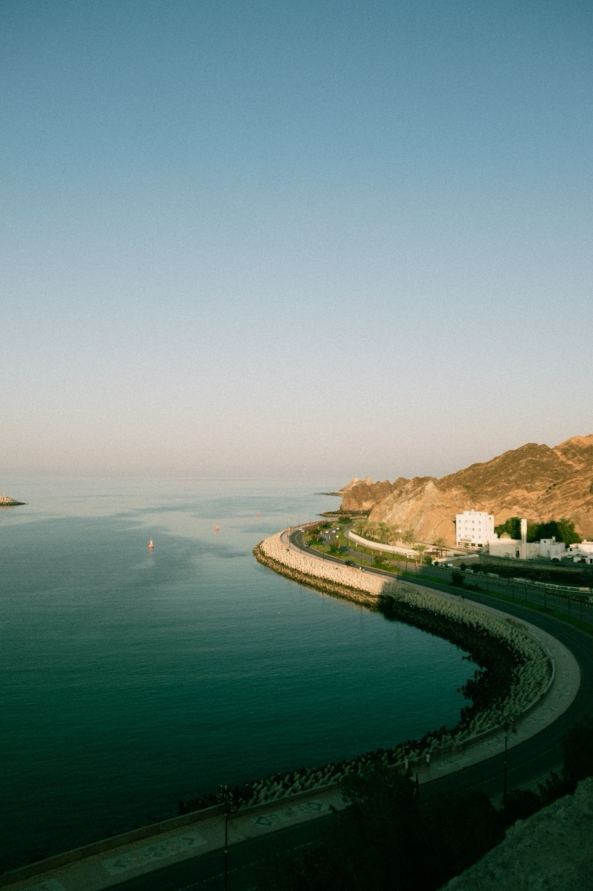
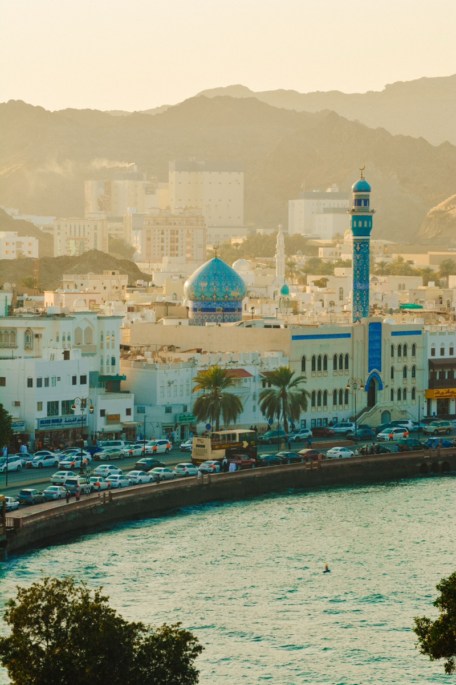
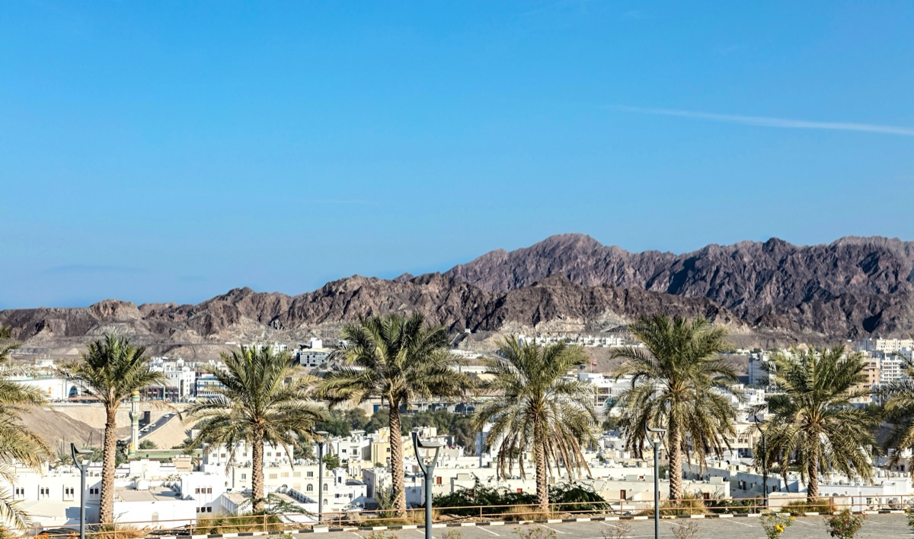
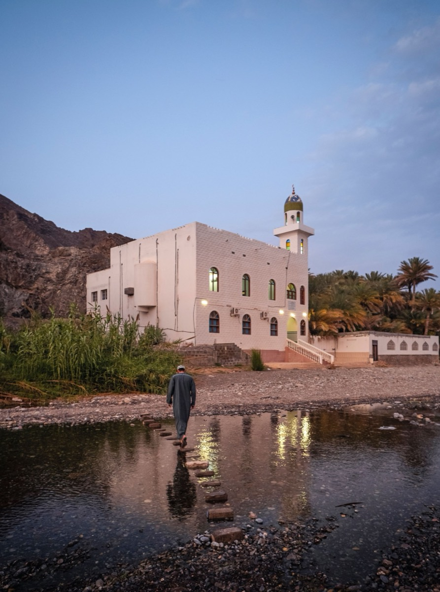

Croisière observation des dauphins et snorkeling
Partez en mer à la rencontre des groupes de dauphins qui vivent au large d'Oman, puis glissez-vous dans l'eau pour un snorkeling au-dessus de récifs calmes.
Chaque voyage Wadi Escape est composé de ces expériences, combinées selon vos envies.
Partez en mer à la rencontre des groupes de dauphins qui vivent au large d'Oman, puis glissez-vous dans l'eau pour un snorkeling au-dessus de récifs calmes.

Une journée plus sportive sur l'eau : des runs de wakeboard associés à une pause snorkeling dans une crique plus tranquille.

Une balade tranquille et panoramique le long du littoral, adaptée aux voyageurs seuls, aux couples comme aux groupes plus nombreux.

Une escapade d'une demi-journée vers l'un des lagons les plus tranquilles d'Oman : baignade, soleil et temps suspendu au bord de l'eau.

Des sentiers dans les collines rocheuses juste derrière la capitale, avec de vastes panoramas sur la ville et la côte.

Wadi Shab, Wadi Bani Khalid, Wadi Tiwi et Snake Canyon : rivières de canyon et bassins creusés dans la roche, à différents niveaux d'intensité. Lire notre guide du Wadi Shab.

La « Montagne verte » d'Oman : villages en terrasses, jardins de roses et vues spectaculaires au bord des falaises, le temps d'une nuit. Lire notre guide du Jabal Akhdar.

Des dunes à perte de vue. Visitez-le à la journée ou passez la nuit dans un camp de luxe au cœur du désert, sous un ciel plein d'étoiles. Lire notre guide du Wahiba Sands.

Une péninsule désertique côtière isolée, connue pour ses flamants roses et ses étendues intactes, avec un camping loin de tout.

Le fort de Nizwa et son souk, le château de Jabreen, le fort de Bahla et une halte dans une fabrique de halwa omanais : une journée complète dans l'arrière-pays historique d'Oman.

La ville historique de Sour, célèbre pour ses boutres, avec une visite saisonnière de la réserve de tortues de Ras Al Jinz pour observer la ponte des tortues marines.

La Grande Mosquée, la corniche et le souk de Mutrah, la vieille ville de Mascate et le palais Al Alam : les monuments de la capitale en une journée. Lire notre guide de Mascate.
Touchez un centre d'intérêt ci-dessous : il sera prérempli dans votre demande de devis, puis ajoutez autant de détails que vous le souhaitez.
La plupart des itinéraires mêlent deux ou trois activités ; dites-nous ce qui vous attire le plus.
Demandez votre devis gratuit →